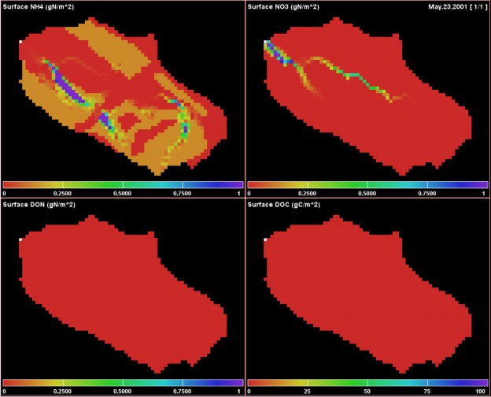

+
E.2 | VELMA Surface Chemistry Pools
Overview (Tutorial E.2 - VELMA Surface Chemistry Pools)
This document describes how to implement surface chemistry pools in VELMA.
"Surface chemistry pools" is a new VELMA feature (version 2.1) that can be used to simulate additions of nutrients and contaminants to road surfaces or other non-soil layer positioned on top of a VELMA soil column (layers 1-4).
In previous model versions, atmospheric deposition of nitrogen, fertilizer additions and so forth had to added to soil layer 1 in VELMA. Now, chemical additions can be more realistically simulated as additions to surfaces that may differ with respect to their permeabilities.
The ability to simulate surface chemistry pools is important because deposited chemicals can potentially reside undissolved on a road or other impermeable surface for some time without being accessible to plant roots and other biogeochemical processes. Or, when rainfall does occur in sufficient amount, the dissolved chemical may run off laterally until reaching a downslope soil column with a more permeable surface.
Note that a new water permeability layer has also been added to VELMA. This feature lies between the surface chemistry pool and soil layer 1. For details see "Tutorial E.1 - Mapping Surface Layer Permeabilities in VELMA".
The Surface Pools "Overlay" Their Corresponding Layered Pools
The surface NH4 pool can be thought of as "overlaying" the four layers of the NH4 chemistry pool, with the water permeability layer lying in between them. Similarly, surface NO3 overlays layered NO3, etc. Surface pool values are in grams of Nitrogen per square meter (g N/m2), the same as the layered pools, or g C/m2, in the case of DOC. Organic Contaminant parameterizations added to VELMA simulation configurations likewise will have a surface pool overlaying a layered pool.
The Nin (Nitrogen Deposition) Surface Pool is Special
Other chemistry surface pools are completely new functionality, but the Nin pool is a refactoring of the already-existing Nin code. Prior Nin behavior continues to be available, and is shunted through the new surface Nin pool.
You can select the type of Nin behavior via the useExperimentalNin configuration parameter. In prior simulation configurations, this parameter was a boolean with the following behavior:
| OLD-Style Value | Simulation Behavior |
|---|---|
| false | Use original/legacy Nin code: Constant daily deposition rate. Vertical transport to NH4 pool layer 1.p NO lateral transport. |
| true | Use Banked Michaelis-Menten Nin code:p Constant daily deposition rate. Vertical transport to NH4 pool layer 1, based on Banked, water-sensitive M-M equation. NO lateral transport. |
In new simulation configurations, the useExperimentalNin parameter is an enum with three possible settings:
| NEW-Style Value | Simulation Behavior |
|---|---|
| NIN_LEGACY | Use original/legacy Nin code: Constant daily deposition rate. Vertical transport to NH4 pool layer 1.p NO lateral transport. |
| NIN_BANKED_MICHAELIS_MENTEN | Use Banked Michaelis-Menten Nin code:p Constant daily deposition rate. Vertical transport to NH4 pool layer 1, based on Banked, water- sensitive M-M equation. NO lateral transport. |
| NIN_SURFACE_POOL | Use new, Surface Nin Pool code:p Constant daily deposition rate into SURFACE_N_IN pool. Vertical transport to NH4 pool layer 1, based on transportable fraction of SURFACE_N_IN pool and water balance's current vertical flow value. Lateral transport to adjacent SURFACE_N_IN pool cells based on water balance's current lateral flow value. |
When older, legacy simulation configuration .xml files are loaded into JVelma, the following mapping from old-style to new-style useExperimentalNin occurs automatically:
| OLD-style Value | NEW-style Value |
|---|---|
| false | NIN_LEGACY |
| true | NIN_BANKED_MICHAELIS_MENTEN |
Notice that there is no way for a legacy simulation configuration to automatically map to the new NIN_SURFACE_POOL mode's code. This is deliberate. The NIN_SURFACE_POOL mode is currently considered very prototype and should not be used without explicit intent.
The Cells of Surface Pools Can Be Empty (and Start Out That Way).
Unlike the surface Nin pool, the other new, surface pools are not automatically utilized by any existing VELMA simulation code, submodel, or process.
All Surface Pools Are Affected by Water Movement, Subject to Permeability
All surface pools (Nin pool included, when useExperimentalNin = SURFACE_N_IN) are affected by the simulation's daily, water-based vertical and lateral chemistry transport steps, but if a surface pool cell's amount is zero, it is ignored for lateral and vertical outflow (it will still accept inflow). This behavior means that simulation configurations created before the introduction of the surface pools should run the same as they did before the surface pools existed. Vertical down-flow from surface pools takes the permeability value between the surface pool cell and its corresponding, underneath, layered pool into account.
The Cells in Surface Pools Stay Empty Unless Explicitly Filled.
Apart from the surface Nin pool, a cell in a surface pool only gains a quantity when you explicitly provide it with one. Once it has a quantity, that quantity may automatically move to surrounding surface cells, or down into layer 1 of the corresponding chemistry's sub-surface layered pool (via water transport). However, cells only gain amounts when those amounts are explicitly provided.
Put Quantities into Surface Pool Cells via Disturbances.
You can introduce quantities of chemical into their respective surface pool by configuring your simulation to include one or more appropriate Disturbances.
Quick summary/overview of the disturbances that affect Surface Pools
SetSpatialDataByMapDisturbanceModel
This is the "standard" Set SpatialData by Map disturbance that assigns all the cells in a given pool via values from a Grid ASCII .asc map file. It is typically used to initialize the various biomass, detritus and chemistry pools. Since surface pools are "like any other pools", you can set initial values for them with this disturbance the same way you would for any other pool.
SurfaceDepositionDisturbanceModel
This is a new disturbance designed to work specifically with surface pools. It allows assignment of specific amounts to specific surface pool cells at specific times during the simulation run. It achieves this pin-point specificity by requiring a more-advanced version of the Historical… disturbance's "jagged array" input file.
FertilizeLsrDisturbanceModel
The "legacy" (i.e. pre-surface pool introduction) Fertilize disturbance model has been updated to include a depositionTargetOption parameter. Its default value is "SOIL", which instructs the disturbance to assign specified amounts of NH4, NO3 and/or Humus to those pool's layer 1 cells. (I.e. the legacy behavior). However, you can set the depositionTargetOption parameter to "SURFACE", which will instead assign specified amounts of NH4 and/or NO3 to the respective surface NH4 and/or NO3 pools instead. Regardless of depositionTargetOption's parameter value, Humus amounts are always deposited to Humus Layer 1, because there is, as yet, no surface pool for Humus.
HistoricalFertilizeLsrDisturbanceModel
The "legacy" Historical Fertilize disturbance model has the same depositionTargetOption as the non- historical FertilizeLsrDisturbanceModel. Note that the new option only alters which pool "layer" (layer 1 or surface) receives the deposition. Whether a give cell location gets fertilized at all is unchanged behavior for either type of fertilize disturbance.
NOTE: Fertilize disturbances only act upon NH4 and NO3 surface pools. Other chemistry (e.g. an Organic Contaminant of some parameterization) pools must be initialized/augmented via one of the other methods listed above.
Spatial Data Writers "Know" About Surface Pools
You can output the state of a surface pool by including a spatial data writer parameterization for that pool as part of your simulation configuration. The keywords for the new, core chemistry spatial data pools are: SURFACE_NH4, SURFACE_NO3, SURFACE_DON, SURFACE_DOC, and SURFACE_N_IN.
Contaminant surface pool names have the text "CONTAMINANT_SURFACE_" plus the Contaminant's uniqueName parameter value appended.
JVelma Provides New Runtime Spatial Displays for the Core Chemistry Surface Pools
There are two new spatial displays available in JVelma's "Display" selector drop-down list: "Surface Chemistry Spatial" and "Surface Nin Spatial".
Here are example screen-captures for each these displays
Surface Chemistry Spatial display for a simulation run that includes a Fertilization disturbance depositing NH4 and NO3 to surface layers.
Applicable Display Range Parameters for the Surface Chemistry Spatial display are:
| Chart Position | Display Range Parameter(s) |
|---|---|
| UPPER LEFT | maxSurfaceNh4SaptialDisplay |
| UPPER RIGHT | maxSurfaceNo3SpatialDisplay |
| LOWER LEFT | maxSurfaceDonSpatialDisplay |
| LOWER RIGHT | maxSurfaceDocSpatialDisplay |
Surface Nin Spatial display for simulation run with useExperimentalNin = NIN_SURFACE_POOL
Applicable Display Range Parameters for the Surfacen Nin Spatial display are:
| Chart Position | Display Range Parameter(s) |
|---|---|
| UPPER LEFT | maxNinSpatialDisplay |
| UPPER RIGHT | maxRainSpatialDisplay |
| LOWER LEFT | maxNh4SpatialDisplay |
| LOWER RIGHT | maxNinSpatialDisplay (or)p maxStandingWaterSpatialDisplay |
Note that the LOWER RIGHT Surface Nin Spatial Display shows either Accumulated N-in (a "hidden" pool associated with Banked Michaelis-Menton mode) or Standing Water (i.e. Surface Water). The former is displayed when useExperimentalNin = NIN_LEGACY or NIN_BANKED_MICHAELIS_MENTEN, the latter when useExperimentalNin = NIN_SURFACE_POOL (as was the case for the above screen capture).